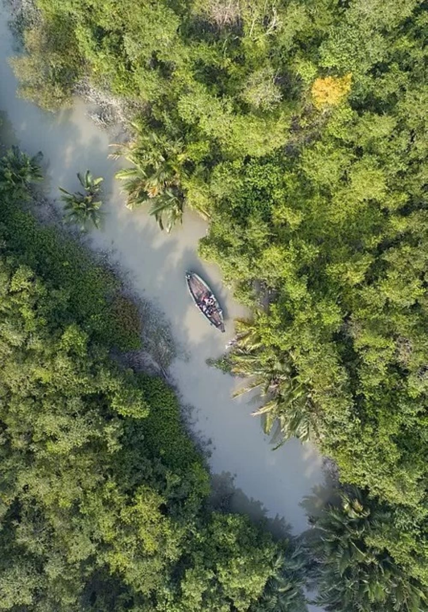

Sundarbans
The Sundarbans is the largest mangrove forest in the world and a UNESCO World Heritage Site, home to the famous Royal Bengal Tigers and diverse wildlife.
Fun Facts:
- Largest tidal mangrove forest in the world.
- Famous for its unique ecosystem and wildlife.
- Home to the Royal Bengal Tiger and estuarine crocodiles.
How to Reach:
- By Air: Nearest airport is Netaji Subhas Chandra Bose International Airport, Kolkata.
- By Train: Canning is the nearest railway station, followed by a boat ride.
- By Road: Accessible from Kolkata via road to Canning or Godkhali.
Best Time to Visit:
The best time to visit the Sundarbans is from November to February when the weather is cooler and ideal for wildlife spotting.
Local Cuisine:
- Try the local fish curry, especially Hilsa and Prawn Malai Curry.
- Enjoy traditional Bengali sweets like Mishti Doi and Sandesh.
- Sample local rice dishes, often served with fresh vegetables.
Accommodation:
- Luxury: Sundarbans Jungle Resort, Taj Gateway Hotel.
- Mid-range: Sunderban Tiger Camp, Mangrove Village.
- Budget: Local homestays and guesthouses available in nearby villages.
Local Attractions:
- Visit the Sajnekhali Wildlife Sanctuary for bird watching.
- Explore the Sudhanyakhali Watch Tower for tiger spotting.
- Take a boat ride through the mangroves to see the unique flora and fauna.
- Discover the local villages and their culture, including traditional fishing methods.